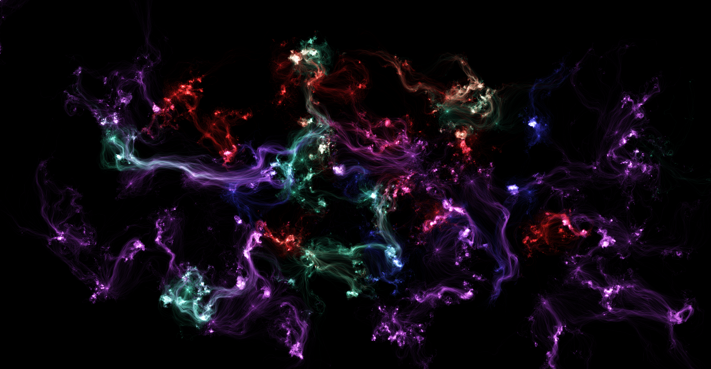
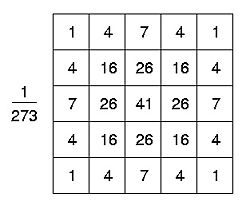
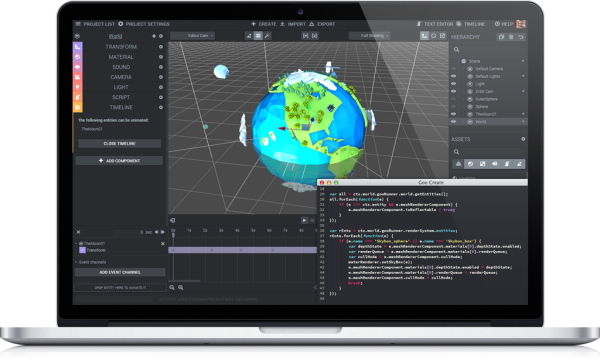
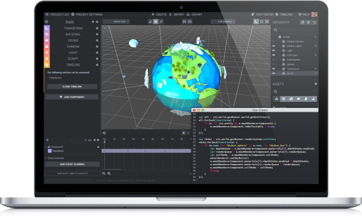
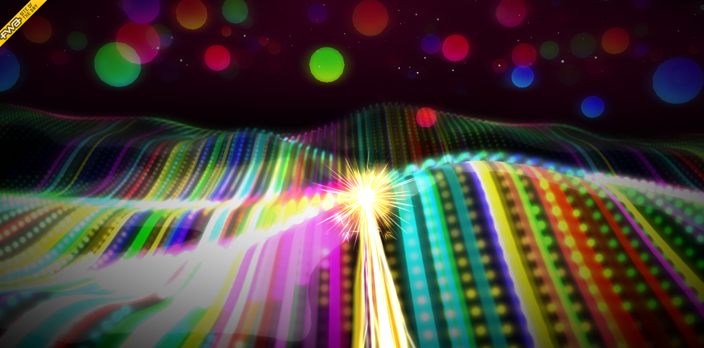
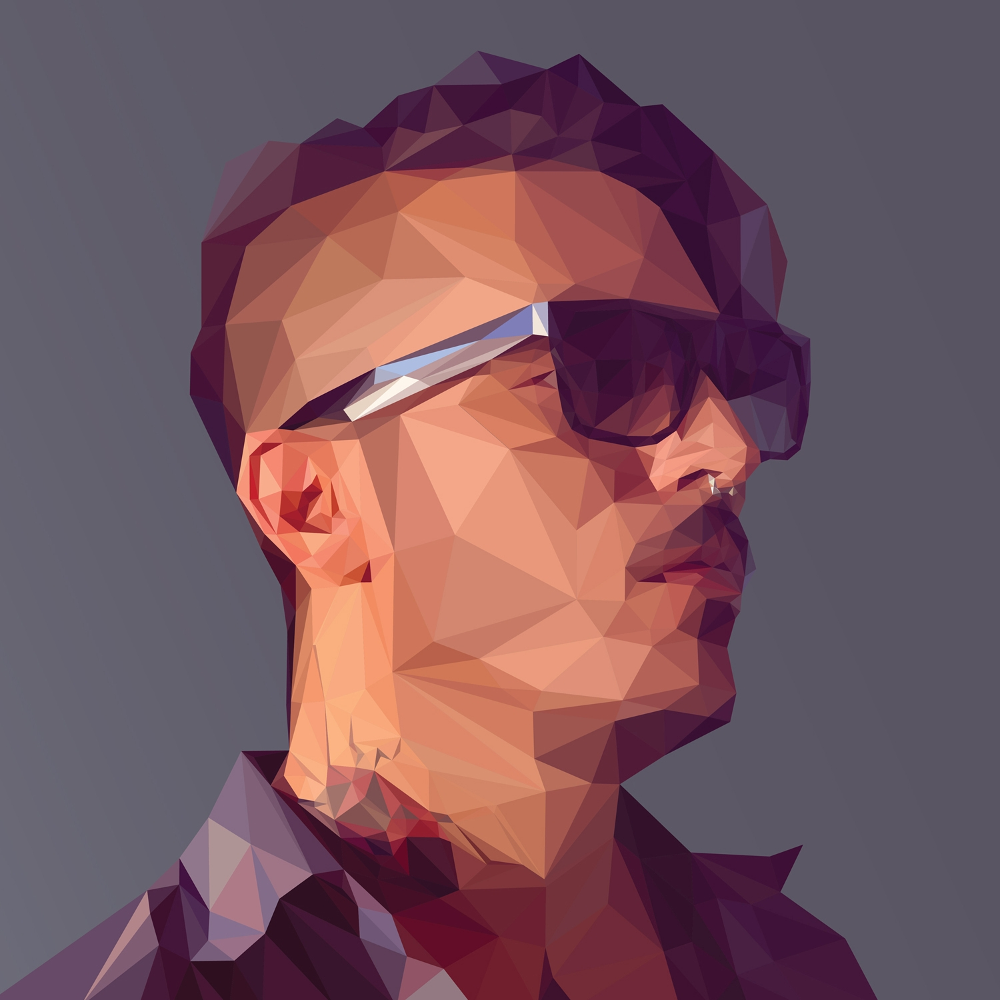

var pixels = ctx.getImageData(x, y, width, height).data; ... ctx.putImageData(pixels, x, y);
Contents
- Canvas Basic
- Writing particle effect with Canvas
- Image processing with Canvas
- SVG and Canvas
- WebGL
- Image processing with WebGL
- Show cases
Canvas Basic
- Immediate mode API
Call rendering commands to draw the entire scene
- Currently 1.0
- Coming 2.0
- IE9+, Chrome, Firefox, Safari...
Create 2D Context
var canvas = document.createElement('canvas');
canvas.width = 500;
canvas.height = 500;
var ctx = canvas.getContext('2d');
-
 Path
Path
- Image
-
 Text
Text
 Path
Path
- Line
- Bezier Curve(Quadratic, Cubic)
- Arc
Draw lines
ctx.beginPath(); ctx.moveTo(100, 100); ctx.lineTo(500, 100); ctx.lineTo(500, 300); ctx.lineTo(100, 300); ctx.lineTo(100, 100); ctx.stroke();
Draw a Cubic Bezier
ctx.beginPath(); ctx.moveTo(100, 100); ctx.bezierCurveTo(300, 100, 200, 300, 500, 300); ctx.stroke();
Draw a Quadratic Bezier
ctx.beginPath(); ctx.moveTo(100, 100); ctx.quadraticCurveTo(300, 100, 500, 300); ctx.stroke();
Draw a Circle
ctx.beginPath(); ctx.arc(300, 200, 100, 0, Math.PI * 2, true); ctx.stroke();
Smile
ctx.beginPath(); ctx.arc(300, 180, 100, 0.2, 3, false); ctx.stroke();
Fill - Ring
ctx.beginPath(); ctx.moveTo(300, 350); ctx.lineTo(400, 50); ctx.lineTo(500, 350); ctx.lineTo(250, 150); ctx.lineTo(550, 150); ctx.lineTo(300, 350); ctx.stroke(); ctx.fill();
Fill - None Zero
ctx.beginPath(); ctx.moveTo(400, 200); ctx.arc(300, 200, 100, 0, Math.PI * 2, true); ctx.moveTo(500, 200); ctx.arc(300, 200, 200, 0, Math.PI * 2, false); ctx.stroke(); ctx.fill();
Styling Path
- fillStyle
- ctx.fillStyle = '#fff', CanvasGradient, CanvasPattern
- strokeStyle
- ctx.strokeStyle = '#fff', CanvasGradient, CanvasPattern
- Line Style
-ctx.lineWidth = 2;
-ctx.lineCap = 'butt', 'round', 'square';
-ctx.lineJoin = 'round', 'bevel'; - Shadow
-ctx.shadowColor = '#000';
-ctx.shadowBlur = 5;
-ctx.shadowOffsetX = 40;
-ctx.shadowOffsetY = 40;
Image
var image = new Image();
image.onload = function () {
// Draw after image loaded
ctx.drawImage(
image, 0, 0, image.width, image.height
);
}
image.src = 'some.jpg';
Text
ctx.fontStyle = '30px Helvetica Neue';
ctx.strokeStyle = '#fff';
ctx.strokeText('蛤蛤蛤蛤', 30, 30);
Writing Particle Effect with Canvas
Particle Effect
- Fire
- Fireworks
- Snow, Rain
- Water
- Explosion
- Magic Effect


Draw a Single Particle
function drawParticle() {
ctx.fillStyle = 'white';
ctx.beginPath();
ctx.arc(100, 50, 10, 0, Math.PI * 2, true);
ctx.fill();
}
Make it Alive - Add Kinematics
- Life
- Position
- Velocity
- Acceleration
- Color
- Size
Add More Particles
Particle Management
- Emit particles
- Update and draw particles
- Remove dead particles
Add Some Randomness
Effector - Collision with Box
Effector - Force Field
With Motion Blur
backCtx.drawImage(canvas, 0, 0, width, height); ctx.clearRect(0, 0, width, height); ctx.globalAlpha = 0.9; ctx.drawImage(backCanvas, 0, 0, width, height); ctx.globalAlpha = 1; ....
Optimization
-
Use subpath instead of path
Less stroke(), fill()
Less fillStyle, strokeStyle
-
Use layer
Only repaint the moving objects
Particle Texture
- Random color
- Keep last frame
- Perlin noise
- globalCompositeOperation = 'lighter'
Image Processing with Canvas
Pixel Manipulation
Pixel Layout - Uint8ClampedArray
Gray - Luminance
var r = pixels[i]; var g = pixels[i + 1]; var b = pixels[i + 2]; var lum = r * 0.21 + g * 0.72 + b * 0.07; pixels[i] = lum; pixels[i + 1] = lum; pixels[i + 2] = lum;
Gaussian Blur
Convolution

Gaussian Kernel
SVG and Canvas
Advantage of SVG
-
Dom tree
Graph objects management
-
Event handling
Mouse picking
- Animation
- CSS
Advantage of Canvas
- Pixel manipulation
- Better integration with WebGL
- Performance
WebGL
WebGL Introduction
- Currently 1.0
- Closely to the OpenGL ES 2.0
- Many extensions
- Coming 2.0
Browser Support
PC
- IE 11
- Chrome
- Firefox
- Safari
Mobile
- iOS 8 safari
- 腾讯 X5
- 3D model viewer
- Web Game
- Procedure, interactive film
- Visualization
- Realtime image filter
- 2D Acceralation
- ...
3D Model Viewer - Sketchfab

Speero Wip by nikohard on Sketchfab
3D Model Viewer - dota2hero


Game Platform
- Unreal Engine 4
- Unity 5
- Goo Engine
- PlayCanvas

 


Interactive Film - Ro.me

Interactive Film - Lights
Interactive Film - Worldcup

Visualization - ECharts-X


Learning WebGL - Lesson 1

var gl;
function initGL(canvas) {
try {
gl = canvas.getContext("experimental-webgl");
gl.viewportWidth = canvas.width;
gl.viewportHeight = canvas.height;
} catch (e) {
}
if (!gl) {
alert("Could not initialise WebGL, sorry :-(");
}
}
function getShader(gl, id) {
var shaderScript = document.getElementById(id);
if (!shaderScript) {
return null;
}
var str = "";
var k = shaderScript.firstChild;
while (k) {
if (k.nodeType == 3) {
str += k.textContent;
}
k = k.nextSibling;
}
var shader;
if (shaderScript.type == "x-shader/x-fragment") {
shader = gl.createShader(gl.FRAGMENT_SHADER);
} else if (shaderScript.type == "x-shader/x-vertex") {
shader = gl.createShader(gl.VERTEX_SHADER);
} else {
return null;
}
gl.shaderSource(shader, str);
gl.compileShader(shader);
if (!gl.getShaderParameter(shader, gl.COMPILE_STATUS)) {
alert(gl.getShaderInfoLog(shader));
return null;
}
return shader;
}
var shaderProgram;
function initShaders() {
var fragmentShader = getShader(gl, "shader-fs");
var vertexShader = getShader(gl, "shader-vs");
shaderProgram = gl.createProgram();
gl.attachShader(shaderProgram, vertexShader);
gl.attachShader(shaderProgram, fragmentShader);
gl.linkProgram(shaderProgram);
if (!gl.getProgramParameter(shaderProgram, gl.LINK_STATUS)) {
alert("Could not initialise shaders");
}
gl.useProgram(shaderProgram);
shaderProgram.vertexPositionAttribute = gl.getAttribLocation(shaderProgram, "aVertexPosition");
gl.enableVertexAttribArray(shaderProgram.vertexPositionAttribute);
shaderProgram.pMatrixUniform = gl.getUniformLocation(shaderProgram, "uPMatrix");
shaderProgram.mvMatrixUniform = gl.getUniformLocation(shaderProgram, "uMVMatrix");
}
var mvMatrix = mat4.create();
var pMatrix = mat4.create();
function setMatrixUniforms() {
gl.uniformMatrix4fv(shaderProgram.pMatrixUniform, false, pMatrix);
gl.uniformMatrix4fv(shaderProgram.mvMatrixUniform, false, mvMatrix);
}
var triangleVertexPositionBuffer;
var squareVertexPositionBuffer;
function initBuffers() {
triangleVertexPositionBuffer = gl.createBuffer();
gl.bindBuffer(gl.ARRAY_BUFFER, triangleVertexPositionBuffer);
var vertices = [
0.0, 1.0, 0.0,
-1.0, -1.0, 0.0,
1.0, -1.0, 0.0
];
gl.bufferData(gl.ARRAY_BUFFER, new Float32Array(vertices), gl.STATIC_DRAW);
triangleVertexPositionBuffer.itemSize = 3;
triangleVertexPositionBuffer.numItems = 3;
squareVertexPositionBuffer = gl.createBuffer();
gl.bindBuffer(gl.ARRAY_BUFFER, squareVertexPositionBuffer);
vertices = [
1.0, 1.0, 0.0,
-1.0, 1.0, 0.0,
1.0, -1.0, 0.0,
-1.0, -1.0, 0.0
];
gl.bufferData(gl.ARRAY_BUFFER, new Float32Array(vertices), gl.STATIC_DRAW);
squareVertexPositionBuffer.itemSize = 3;
squareVertexPositionBuffer.numItems = 4;
}
function drawScene() {
gl.viewport(0, 0, gl.viewportWidth, gl.viewportHeight);
gl.clear(gl.COLOR_BUFFER_BIT | gl.DEPTH_BUFFER_BIT);
mat4.perspective(45, gl.viewportWidth / gl.viewportHeight, 0.1, 100.0, pMatrix);
mat4.identity(mvMatrix);
mat4.translate(mvMatrix, [-1.5, 0.0, -7.0]);
gl.bindBuffer(gl.ARRAY_BUFFER, triangleVertexPositionBuffer);
gl.vertexAttribPointer(shaderProgram.vertexPositionAttribute, triangleVertexPositionBuffer.itemSize, gl.FLOAT, false, 0, 0);
setMatrixUniforms();
gl.drawArrays(gl.TRIANGLES, 0, triangleVertexPositionBuffer.numItems);
mat4.translate(mvMatrix, [3.0, 0.0, 0.0]);
gl.bindBuffer(gl.ARRAY_BUFFER, squareVertexPositionBuffer);
gl.vertexAttribPointer(shaderProgram.vertexPositionAttribute, squareVertexPositionBuffer.itemSize, gl.FLOAT, false, 0, 0);
setMatrixUniforms();
gl.drawArrays(gl.TRIANGLE_STRIP, 0, squareVertexPositionBuffer.numItems);
}
function webGLStart() {
var canvas = document.getElementById("lesson01-canvas");
initGL(canvas);
initShaders();
initBuffers();
gl.clearColor(0.0, 0.0, 0.0, 1.0);
gl.enable(gl.DEPTH_TEST);
drawScene();
}
- Create context
- Create vertex buffer
- Bind vertex buffer
- Create shader
- Bind shader
- Set uniform
- Draw
drawArrays, drawElements
Graphics Pipeline


Image Processing with WebGL
Realtime Lowpolify
WebGL Libraries
- THREE.js
- BabylonJS
- lightgl
- qtek
- ...
- Scene
- Camera
- Light
- Material
- ...
Web3D App Pipeline

不要有了锤子就看什么都是钉子
Show Case